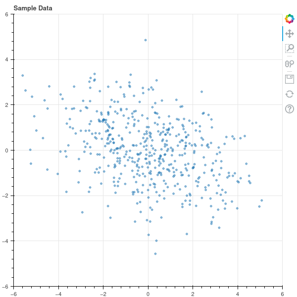
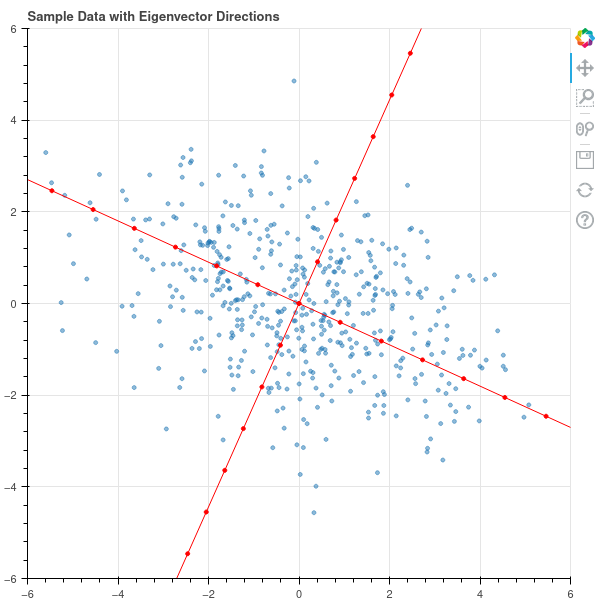
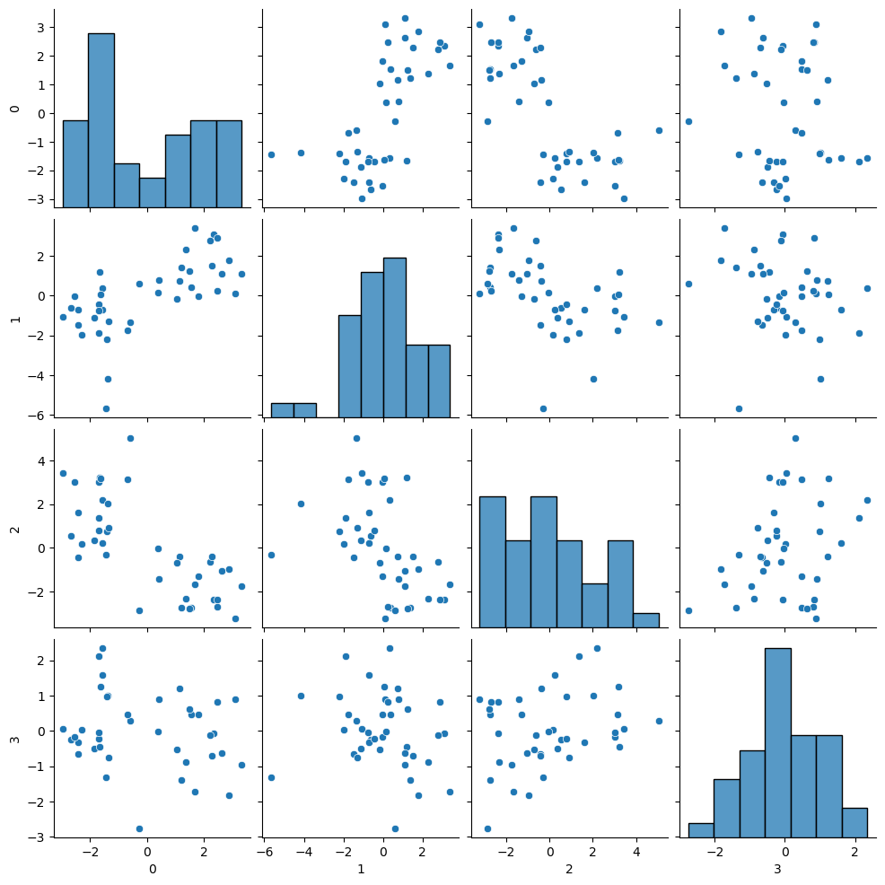
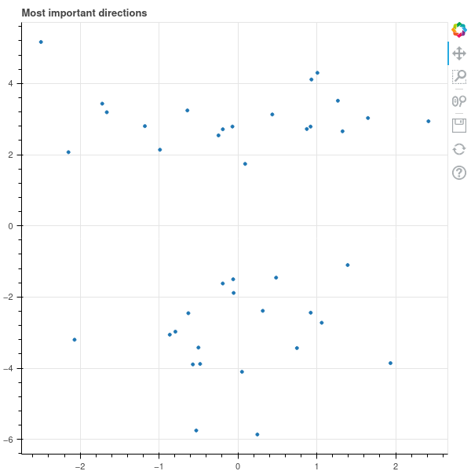
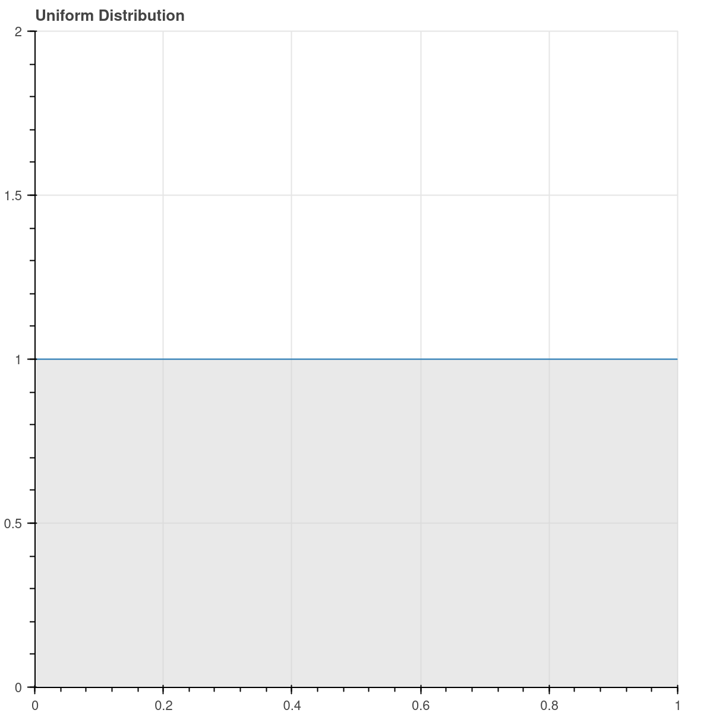
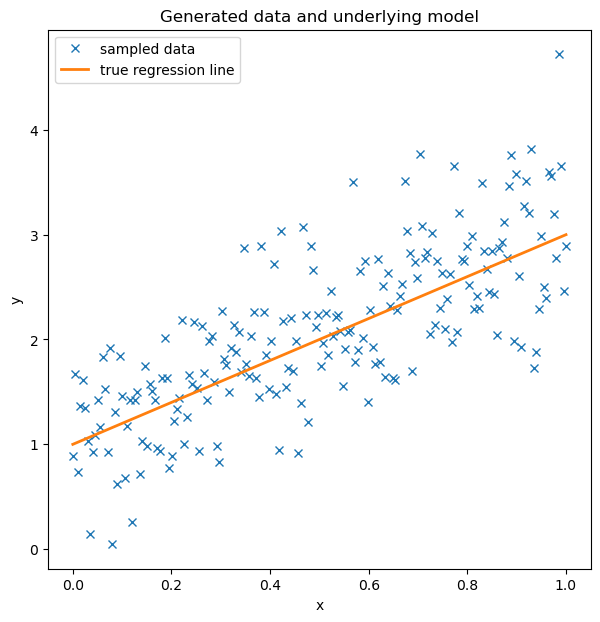
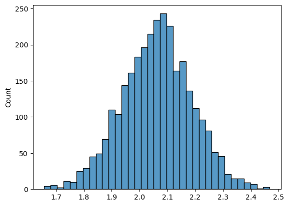
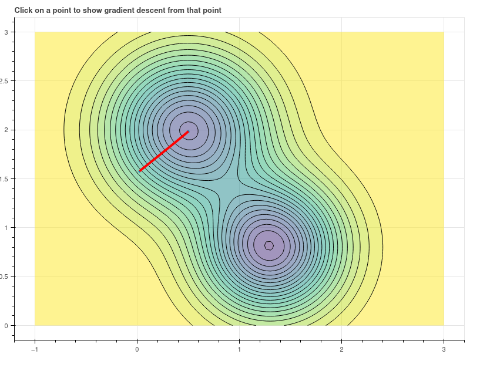

The Three Theorems of Data Science
UConn Math Club
April 3, 2024
UConn Math Club
April 3, 2024
Introduction
What is Data Science/Machine Learning/AI?
An interdisciplinary field that combines theory and practice from
- Mathematics
- Computer Science
- Statistics
to extract patterns from data, predict the behavior of complex systems, and generate responses to input that capture aspects of human behavior.
The role of mathematics
Both Statistics and Computer Science grew out of Mathematics.
Mathematics seeks:
- abstraction: finding the simplest underlying framework for expressing the phenomena of interest
- generality: establishing results in the broadest possible framework
- rigor: establishing the truth of results through logical reasoning
Theorems
A theorem is a mathematical statement that is established by deductive proof.
Theorem: The sum of two odd numbers is even.
Proof: Let \(a\) and \(b\) be odd numbers. Then \(a=2k+1\) and \(b=2s+1\) where \(k\) and \(s\) are some integers. Then \(a+b=2k+2s+1+1=2k+2s+2=2(k+s+1)\). Since \(a+b\) is a multiple of \(2\), it is even.
Theorem: Let \(A\) and \(B\) be the lengths of the sides of a right triangle, and \(C\) be the length of its hypotenuse. Then \(C^2=A^2+B^2\).
Three theorems at the heart of Data Science
- The Spectral Theorem
- Bayes’s Theorem
- The Chain Rule
The spectral theorem
The spectral theorem
Theorem: Let \(D\) be a real \(n\times n\) symmetric matrix. Then:
- there are real numbers \(\lambda_n\ge \lambda_{n-1}\ge\cdots\ge\lambda_{1}\) and linearly independent vectors \(v_n,\ldots, v_1\) in \(\mathbf{R}^{n}\) such that \(Dv_{i}=\lambda_{i}v_{i}\).
- If \(\lambda_{i}\not=\lambda_{j}\), then \(v_{i}\) and \(v_{j}\) are orthogonal.
- there is an orthonormal basis \(u_1,\ldots, u_n\) for \(\mathbb{R}^{n}\) such that \(Du_{i}=\lambda_{i}u_{i}\).
- if \(P\) is the matrix whose columns are the \(u_{i}\), then \(PP^{\intercal}=I\) and \(P^{\intercal}DP\) is the diagonal matrix \(\Lambda\) whose diagonal entries are the \(\lambda_{i}\).
Application in Data Science
Suppose that \(X\) is an \(N\times k\) data matrix with \(N\) sample points each having \(k\) real valued features.
We want to generate new features by combining the existing features
The new features are sometimes called scores
Example: class score is weighted sum of scores on individual assignments:
\[ S = w_1 f_1 + w_2 f_2 +\cdots w_k f_k \]
Which scores are most informative? Those that “spread out the data” the most.
Some data

Covariance matrix
Assume that the features all have mean value zero. The covariance matrix of the data is
\[ D=\frac{1}{N}X^{\intercal}X. \]
It is symmetric.
For the data above this matrix is
\[ D=\left(\begin{matrix} 4.32 & -1.2 \\ -1.2 & 2.16\end{matrix}\right) \]
Spectral theorem in this case
The \(\lambda\)’s are \(\lambda_1=4.85\) and \(\lambda_2=1.63\).
The matrix \(P\) is
\[ P= \left(\begin{matrix} -0.41 & -0.91 \\ -0.91 & 0.41 \end{matrix}\right) \]
The orthogonal eigenvectors
The orthonormal vectors (eigenvectors) are the “natural coordinates” for the data.

Dimensionality Reduction
The “directions” with the largest eigenvalues capture the “most interesting” part of the data. Suppose we have 40 data points with 4 features.

Use the two “directions” with largest eigenvalues

Bayes’s Theorem
Bayesian perspective
Our life experiences (and maybe our genetics) give us a set of “prior probabilities” for judging truth or falsehood or evaluating likelihood in the world.
When confronted with a new event, we re-evaluate these prior probabilities and update them.
Example: I move to CT from Colorado where it is very dry. When I go on a hike, I don’t expect rain (my “prior probability for rain” is low). So I don’t bring a raincoat. But it rains a lot in CT, and each time it does, I update my sense of the chance of getting rained on to treat it as more likely; eventually I decide that when I hike in CT I need to bring a raincoat.
Bayes’s Theorem
Theorem: Let \(A\) and \(B\) be events in a probability space. Then
\[ P(A|B)=\frac{P(B|A)P(A)}{P(B)} \]
where \(P(A|B)\) is the conditional probability of \(A\) given \(B\).
Bayes Theorem - a simple example
Suppose we wish to understand how something like a vaccine reduces the risk of death from (hypothetically speaking) a new respiratory virus.
In other words, we are interested in comparing:
- the probability of death from the virus in the population at large
- the difference in the probability of death between those vaccinated and those not.
The 2x2 grid
From a population of 10000 people (note: these are totally made up numbers)
| Lived | Died | Totals | |
|---|---|---|---|
| Vaccinated | 7450 | 50 | 7500 |
| Unvaccinated | 2470 | 30 | 2500 |
| Totals | 9820 | 80 | 10000 |
Here if \(V\) is the event “vaccinated” and “D” is the event died, we have \(P(D|V)=50/7500=.6\%\) while \(P(D)=.8\%\) and \(P(D|~V)=1.2\%\).
More on the grid
Notice that:
- more vaccinated people died than unvaccinated people, but
- you are twice as likely to die if you are unvaccinated than if you are vaccinated.
Also
\[ P(D|V)=\frac{P(V|D)P(D)}{P(V)}=(.625)(.008)/(.75) \]
The chance of dying is \(.8\%\); but if you “learn” that someone is vaccinated, you can improve that estimate to \(.6\%\).
Sampling methods and learning
Suppose we wish to build a system that recognizes pictures of cats; and, to begin with, we have a large data set of images marked as “cat” or “not cat”. Call this our dataset \(D\).
Our system is a mathematical model or function \(F\) that depends on a bunch of parameters \(\Theta\). We have a prior distribution \(P(\Theta)\) on \(\Theta\) that represents some kind of initial guess about the parameters (like, say, the \(\Theta\) are clustered around zero).
Sampling continued
A sampling method uses Bayes Theorem in the form:
\[ P(\Theta|D)\propto P(D|\Theta)P(\Theta) \]
Here \(P(D|\Theta)\) is the probability that our parameters \(\Theta\) predict the given data \(D\). \(P(\Theta|D)\) is the updated probability distribution on \(\Theta\) taking the values \(D\) into account.
A Monte Carlo sampler draws samples from \(P(\Theta|D)\) (the “posterior distribution”) based on \(D\); these give better information about \(\Theta\) in light of the data.
Example
Suppose that we have a coin that we flip 10 times and get 7 heads. We would like to know what this tells us about the probability \(p\) of getting heads on a single flip.
To take a Bayesian point of view, we need a “prior” probability distribution that summarizes what we believe about the coin. Suppose we have no opinion about it. Then the prior distribution on \(p\) is the flat, “uniform” distribution on \([0,1]\).
The Prior Distribution
 {width=3in}
The Posterior Distribution
The posterior distribution on \(p\) is the distribution on \(p\) conditional on the data (7 heads in 10 flips). By Bayes Theorem we have
\[ P(p|D) = \frac{P(D|p)P(p)}{P(D)} \]
- \(P(D|p)\) is the chance of getting \(7\) heads if the probabiltiy is \(p = p^{7}(1-p)^{3}\)
- \(P(p)\) is the prior distribution on \(p\) (which in our case is \(1\))
- \(P(D)\) can be hard to compute, but since we know that \(P(p|D)\) has total integral one, we can compute it by integrating \(p^{7}(1-p)^{3}\) over \([0,1]\). (Incidentally this is called a “beta” integral).
An integration problem
If you’re interested you can show that
\[ \int_{0}^{1} x^{A}(1-x)^{B}dx = \frac{A!B!}{(A+B+1)!} = \Beta(A+1,B+1) \]
The Posterior Distribution (graphed)
 {width=3in}
{width=3in}
Non-uniform prior
Suppose that we have strong reason to believe that our coin is fair. Then we might choose a prior distribution that is peaked at \(p=1/2\). For example, suppose we had done 10 previous experiments and gotten 5 heads each time. Then our prior distribution might be \(p^5(1-p)^5\).
In this case, the posterior distribution is
\[ P(p|D) = p^{12}(1-p)^{8} \]
Posterior with non-uniform prior
 {width=3in}
{width=3in}
Bayesian regression

A linear regression model fit to sample data.
The posterior distribution on the slope

The distribution \(P(\mathrm{slope}|\mathrm{data})\).
The Chain Rule
The Chain Rule
Let \(F:\mathbf{R}^{n}\to \mathbf{R}^{m}\) and \(G:\mathbf{R}^{m}\to \mathbf{R}^{k}\) be differentiable functions at a points \(x_0\in \mathbf{R}^{n}\) and \(x_1=F(x_0)\in\mathbf{R}^{m}\). Then
\[ D_{x_{0}}(G\circ F)=D_{x_{1}}(G)D_{x_{0}}(F). \]
First Application
Let \(F:\mathbf{R}^{n}\to \mathbf{R}\) be a function of \(n\) variables x_1,, x_n. Then the gradient vector
\[ \nabla F = \left[\begin{matrix} \frac{\partial F}{x_{1}} & \cdots & \frac{\partial F}{x_{n}}\end{matrix}\right] \]
points in the direction of most rapid increase of \(F\).
Proof: Consider
\[ \frac{d}{dt}F(\mathbf{x}+t\mathbf{v})|_{t=0}=\nabla F\cdot \mathbf{v} \]
which measures the rate of change of \(F\) as you travel in with velocity \(v\). If \(\|\mathbf{v}\|^2=1\) (so you travel at speeed one) this is maximal when \(\mathbf{v}\) points in the direction of \(\nabla F\).
Gradient Ascent/Descent
Similarly, \(F\) decreases most rapidly if you move in the direction of \(-\nabla F\).
A machine learning algorithm is typically a complicated function \(F(x;u)\) where \(x\) is the data and \(u\) are a set of unknown parameters. The “goodness” of our function is controlled by a “loss” or “error” function \(L(x;u)\). We try to adjust the weights \(u\) to minimize this.
Algorithm: (Gradient Descent) Iteratively compute the gradient \(\nabla L\) of \(L\) with respect to the variables \(u\), and then repeatedly modify \(u\) by a small multiple of the gradient, reducing \(L\) at each step, until this process stabilizes.
 Animation
Gradient Descent in Deep Learning
A deep learning algorithm is a composition of a sequence of linear and nonlinear operations:
\[ F(x;u)=L_1(u_1)\circ L_2(u_2)\circ\cdots\circ L_n(u_n) \]
To optimize \(F(x;u)\) we apply some version of gradient descent to minimize the “loss” function by varying the \(u_i\).
Deep learning software like pytorch can compute the chain rule “automatically”.
Example
Least Squares Via Torch
- Loss is MSE
- Model is z=wx+b
- Derivative of MSE with respect to w is \[\frac{-2}{10}\sum_{i=1}^{10} (z_i-wx_i-b)x_i\]
Code
x_data = torch.tensor(x.reshape(10,1))
w=torch.rand(1,1,dtype=torch.float64,requires_grad=True)
b=torch.rand(1,1,dtype=torch.float64,requires_grad=True)
y_data = torch.tensor(y.reshape(10,1))
z_data=torch.matmul(x_data,w)+b
loss = torch.nn.functional.mse_loss(z_data,y_data)Results
print(torch.sum(-2*(z_data-y_data)*x_data)/10)and
loss.backward()
print(w.grad)are the same.